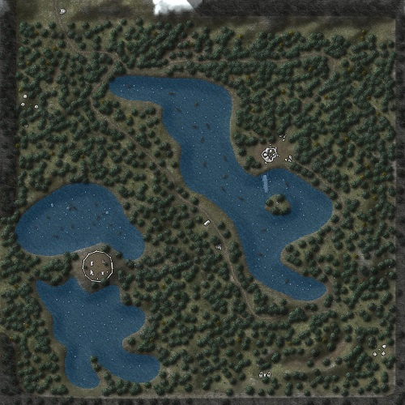

Embedding Scalable Vector Graphics (SVG) in Web Applications
Lately I have been researching a lot about the SVG technology. The above mini showcase is purely achieved by SVG animation that I
am going to explain below.
SVG Advantages
- SVG is vector technology and not raster technology
- SVG is XML and works within other language formats
- SVG is easily edited
- Classic images (PNG's, JPEG's etc) can be heavy
Having to deal with this amazingly increasing number of devices out there, obligates developers to generate multiple images on
different scales in order to deal with each device separately. On the other hand, when you have an SVG then you simply have a vector
of the wanted characteristics of your image which leads to much easier scaling. Of course, this is only applicable to kindly "simply"
images like classic schemas, letters etc. although lately more complex images can be developed by using one of the multiple
SVG editors.
Code Example
The code used for generating the above results is the following:
<div style="position: absolute; left: 0; top: 0;"></div>
<div style="position: relative; ">
<svg width="500" height="500">
<line x1="90" y1="85" x2="350" y2="85" style="stroke:rgb(0,0,255);stroke-width:2"/>
<a xlink:href="https://developer.mozilla.org/en/docs/Web/SVG" style="cursor: help;" target="blank">
<rect x="20"
y="50"
width="70"
height="70"
style="fill:rgb(255,102,178); stroke:red;stroke-width:4;fill-opacity:0.3;stroke-opacity:1"/>
</a>
<a xlink:href="https://developer.mozilla.org/en/docs/Web/SVG" style="cursor: help;" target="blank">
<rect x="350"
y="50"
width="70"
height="70"
style="fill:rgb(255,255,0);stroke:yellow;stroke-width:4;fill-opacity:0.3;stroke-opacity:1"/>
</a>
<polyline points="250,500 250,250 55,250 55,120" style="fill:none;stroke:black;stroke-width:3"/>
<g transform="translate(-25,-25)">
<image width="50px" height="50px" xlink:href="./pictures/character.gif">
<animateMotion path="M 250 480 L 250 250 L 55 250 L 55 120 L 20 120 L 20 50 L 70 50 L 70 120
L 55 120 L 55 250 L 250 250 L 250 480" dur="15s" repeatCount="indefinite"/></image></g></svg></div>
As you can see this is a a pretty straightforward example which uses an absolute path that I have stored in the polyline tag.
Way more complex paradigms could be created in order to support totally dynamic behaviors. SVG is becoming more popular and
whenever we (developers) have the opportunity to add Scalable Vector Graphics in our projects we should add them without
thinking twice.